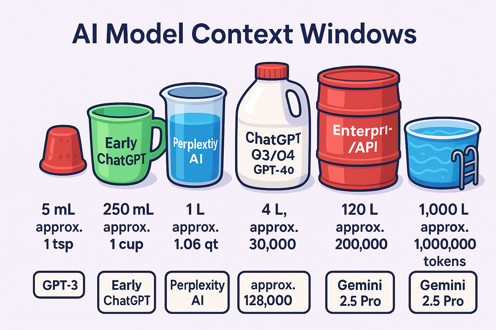

graph LR
TITLE[AI Model Context Windows]
TITLE -->|Thimble| A[5 mL; ~1 tsp]
A --> B[GPT-3]
TITLE -->|Cup| C[250 mL; ~1 cup]
C --> D[Early ChatGPT]
TITLE -->|Quart| E[1 L; ~1.06 qt]
E --> F[Perplexity AI]
TITLE -->|Gallon| G[4 L; ~1.06 gal]
G --> H[ChatGPT O3/O4]
TITLE -->|Barrel| I[120 L; ~31.7 gal]
I --> J[Enterprise/API]
TITLE -->|Swimming Pool| K[1,000 L; ~264 gal]
K --> L[Gemini 2.5 Pro]
---
graph LR
TITLE[AI Model Context Windows]
TITLE -->|Thimble| A[5 mL; approx. 1 tsp]
A --> B[GPT-3]
B --> C[approx. 2,000 tokens]
TITLE -->|Cup| D[250 mL; approx. 1 cup]
D --> E[Early ChatGPT]
E --> F[approx. 8,000-32,000 tokens]
TITLE -->|Quart| G[1 L; approx. 1.06 qt]
G --> H[Perplexity AI]
H --> I[approx. 30,000 tokens]
TITLE -->|Gallon| J[4 L; approx. 1.06 gal]
J --> K[ChatGPT O3/O4; GPT-4o]
K --> L[approx. 128,000 tokens]
TITLE -->|Gallon| M[4 L; approx. 1.06 gal]
M --> N[Claude 3.7 Sonnet]
N --> O[approx. 128,000 tokens]
TITLE -->|Barrel| P[120 L; approx. 31.7 gal]
P --> Q[Enterprise/API]
Q --> R[approx. 200,000 tokens]
TITLE -->|Swimming Pool| S[1,000 L; approx. 264 gal]
S --> T[Gemini 2.5 Pro]
T --> U[approx. 1,000,000 tokens]
